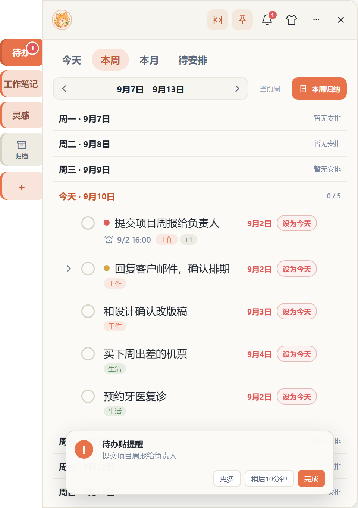

01
今天、本周、本月，安排清楚
按时间查看待办，未安排的事也有独立入口；过期事项可以一键安排到今天。
刚刚好的功能
围绕每天真正会用到的记录、安排和提醒设计，不把复杂项目管理塞进你的桌面。
01
按时间查看待办，未安排的事也有独立入口；过期事项可以一键安排到今天。
02
子任务可以独立完成、设置日期和提醒，复杂事项也能轻松推进。
03
支持具体分钟和稍后提醒，不让重要事项被安静地忘掉。
04
把临时想法、会议片段和截图放在同一张便签里，双击图片即可专注预览。
05
八套风格自由切换，也能调节面板透明度，让它更自然地融入桌面。
真实界面
待办、周视图和便签采用同一套视觉语言，在有限的面板里保持清晰。



常见问题
业务内容默认保存在当前 Windows 用户的本机数据目录中，不会因为更换安装目录而丢失。
目前提供 Windows 10 / 11 的 64 位版本。
正常覆盖安装不会清除本机数据。重要内容仍建议定期通过应用内“数据”页面导出保存。
当前处于免费公测阶段。未来如调整为订阅服务，会提前向用户说明。
适用于 Windows 10 / 11（64 位）